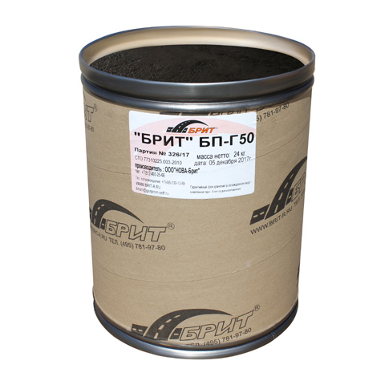
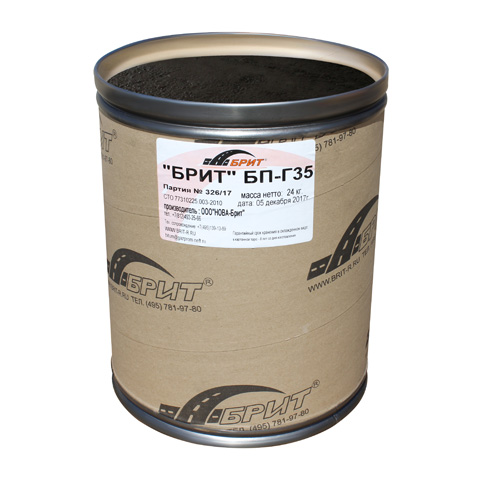
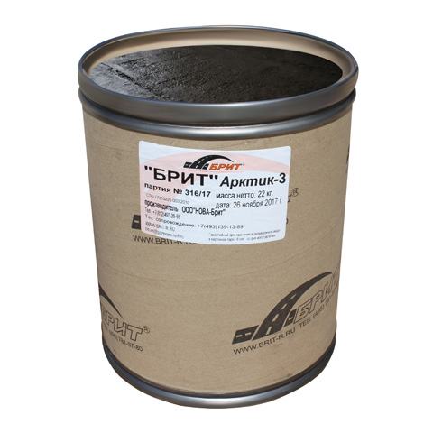
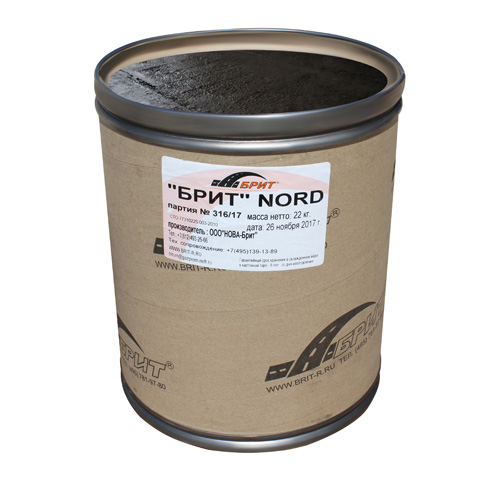

Герметик БП Г-50 БРИТ®
БП Г-50 БРИТ герметик сделает надёжным и качественным любое дорожное покрытие, эластичные свойства сохраняются на протяжении длительного времени, независимо от значительного понижения температуры окружающей среды.
Может использоваться для I, II ДКЗ.
Выпускается в картонных барабанах по 24 кг. Расход 1,1 кг/м3.

Герметик БП Г-35 БРИТ®
БП Г-35 БРИТ герметик сделает надёжным и качественным любое дорожное покрытие, эластичные свойства сохраняются на протяжении длительного времени, независимо от значительного понижения температуры окружающей среды.
Может использоваться для II, IV ДКЗ.
Выпускается в картонных барабанах по 24 кг. Расход 1,1 кг/м3.
Герметик БП Г-25 БРИТ®
БП Г-25 герметик, обеспечивает прочное соединение дорожных плит с полной герметизацией и длительным сроком эксплуатации.
Может использоваться для III, V ДКЗ.
Выпускается в картонных барабанах по 24 кг. Расход 1,1 кг/м3.

Герметик Арктик-3 БРИТ®
Арктик-3 БРИТ уникальный герметик для заделывания деформационных швов аэродромных покрытий.
Может использоваться для I, II ДКЗ.
Выпускается в картонных барабанах по 22 кг. Расход 1,1 кг/м3.

Герметик Nord БРИТ®
NORD БРИТ герметик предназначен для заполнения трещин и повреждений аэродромных покрытий в любых эксплуатационных условиях.
Может использоваться для I, II ДКЗ.
Выпускается в картонных барабанах по 22 кг. Расход 1,1 кг/м3.